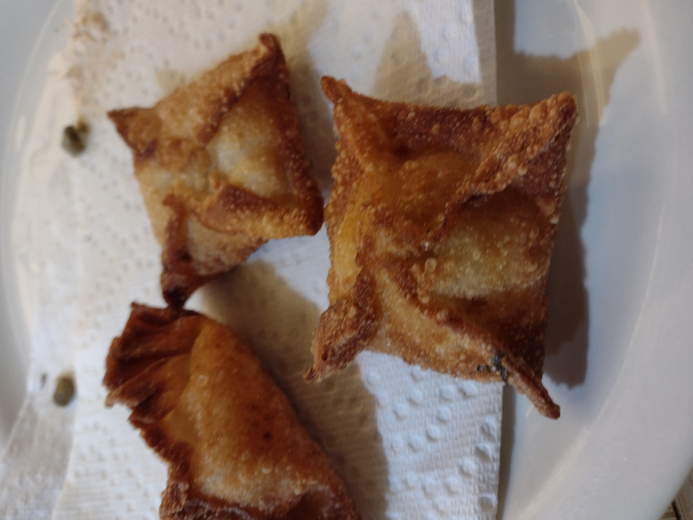

Salmon Rangoon
Crispy smoked salmon and cream cheese wontons.
A much more approachable version of a P.F. Chang's appetizer.
The salmon can be off-putting to some, hence the "strong" tag.
There are generally two types of smoked salmon: lox (cold-smoked) and regular (hot-smoked). For this recipe, hot-smoked has less moisture and turns out better.

Steps
- Flake the salmon into a bowl with the cream cheese.
- Add 2–3 squirts of either Worcestershire or soy. Mix well; there should be no large chunks of salmon.
- Heat 2–3 inches of oil in a large pan to at least 150°C.
- Put a spoonful of the cream cheese mixture into each wrapper and, with a wet finger, moisten the outer edge of half of the wrapper. Seal them with a pinch (watch some YouTube videos for various patterns to make it look like you know what you're doing).
- Fry in the oil at ~175°C, until golden brown and crispy.
- Rest on a paper towel or drying rack.
Variations
These could be pan-fried and flipped over halfway through.
From Doug's Kitchen: https://foodie.chapmaniacs.com/recipes/salmonrangoon/